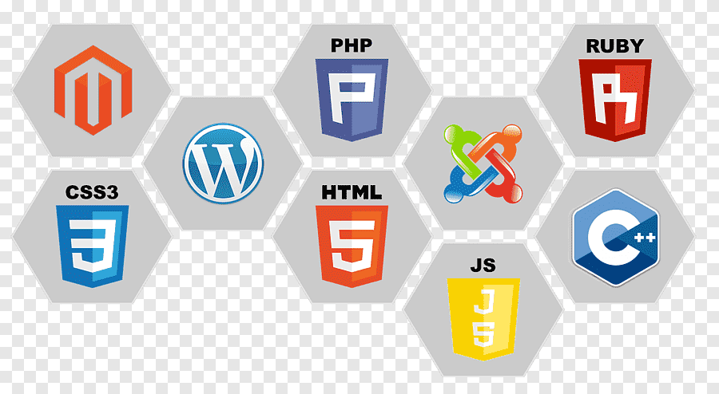
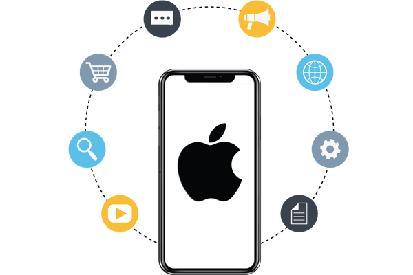
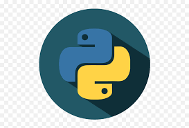

3. I have learnt C language

|  | One day I found out that I had interest towards programming and not just the computer. I found out that there are mainly languages and all perform some different funcion. I thought why don't I try web development and by the way we were being taught HTML in our school. So i developed my passion and interest towards website development and I think it has a great future. |
|  | Frankly speaking I haven't released any of my apps on the play store or the app store because I am still learning this skill and I am just loving it. And nothing different when there was a boom in the usage of the apps and when I had my first smartphone though it was not mine but I loved the way it wokred and the interface it had so I thought it would be a great skill to learn in the 21st century. |
|
This is the first language that I had learned and was taught by an IITian. I enjoyed this course and I am pretty sure that I won't use this language as it has a tough synatx and it is considered as an outdated language, but still I learnt it just to make my basics in programming strong. |
|  | I know that these are a lot of languages for me as a young lad but still I have learnt python and I am still learning it. For me it is the most easiest language for me as it has most of the syntax same as english and keeping my future in my mind this can be a game changer because from my point of view I think that there is going to be a boom in artificial intellegence and robots as it was for the mobiles. So this can be a good career option for me. |
 |
I think I don't need to introduce this language to you as most of you will be familiar with this one. One thing I wanted to make clear is that in app development I am learning kotlin and not Java. This is one of the easiest languages as I practise this in my school, home , and I have done 2 courses on java. |